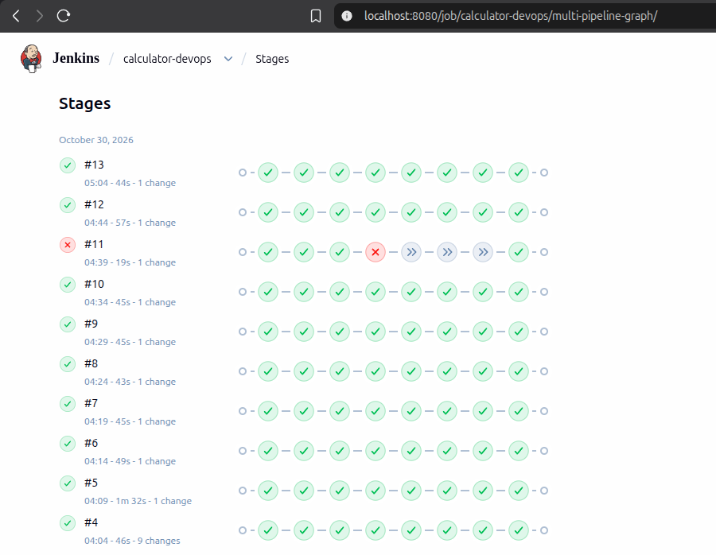
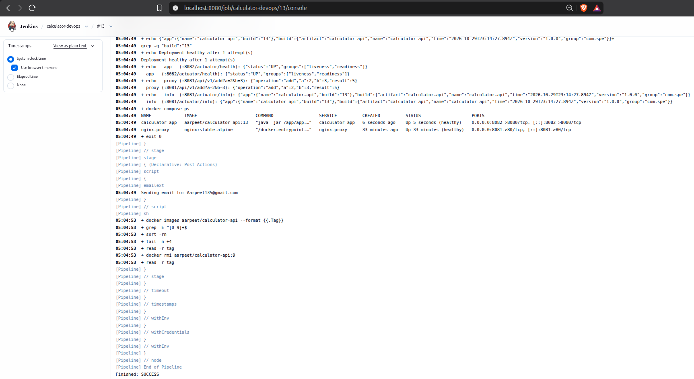
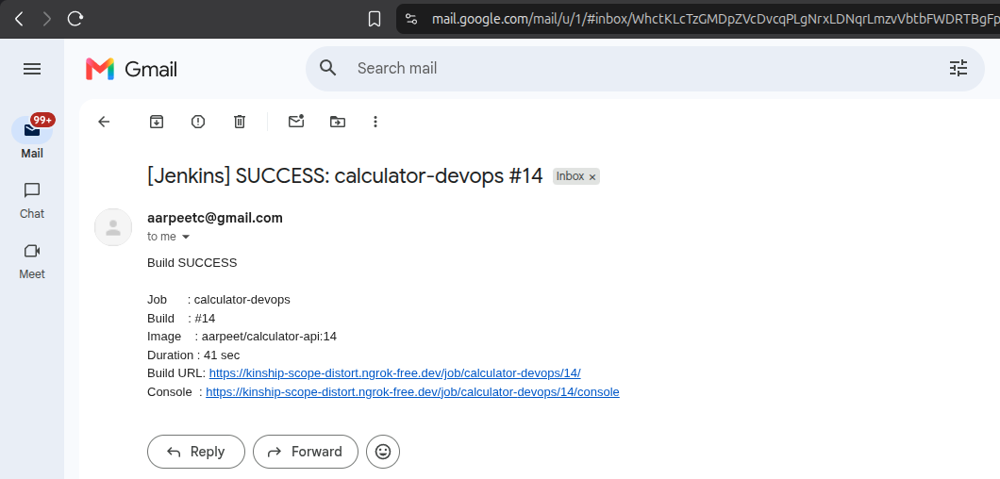
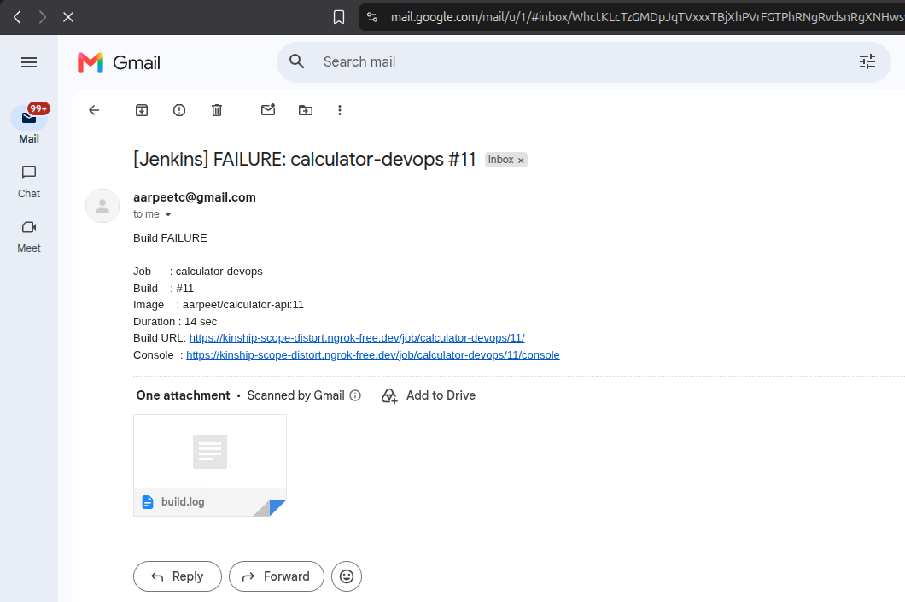
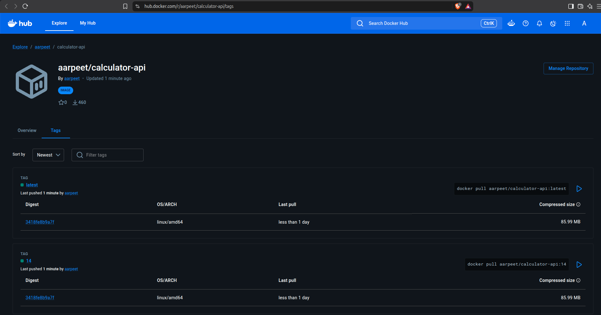
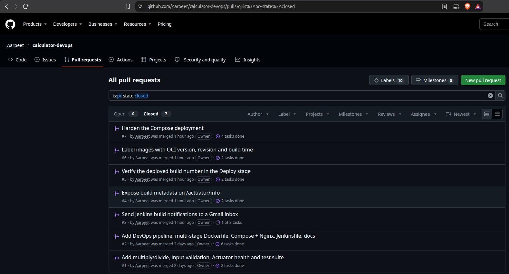

mainA production-style calculator REST service wrapped in a fully automated delivery pipeline. Every commit pushed (or pull request
merged) to main is checked out by Jenkins, compiled, unit- and integration-tested, packaged into a hardened multi-stage Docker image,
published to Docker Hub under an immutable build-number tag, and deployed as a two-container Compose stack (the API behind an Nginx proxy).
A deployment is accepted only once the new build is proven healthy and serving traffic, and every run ends with an email.
Nothing after git push is manual: builds #3 to #15 (Appendix B) were all started by commits.
Jenkins runs natively on the same Linux host and owns port 8080, so the API container (which still listens on 8080 internally:
EXPOSE, health check and proxy upstream are unchanged) is published on host port 8082, and the Nginx proxy on 8081.
Both containers share the custom bridge network calc-net; Nginx reaches the API by its service name calculator-app.
Jenkinsfile)| Stage | Implementation | What it guarantees |
|---|---|---|
| 1 Checkout | checkout scm | Builds exactly the commit that triggered the run; its SHA (GIT_COMMIT) is later stamped into the image. |
| 2 Build | mvn clean package -DskipTests -B | Fast compile and packaging feedback; produces the executable Spring Boot JAR. |
| 3 Test | mvn test -B; post { always { junit 'target/surefire-reports/*.xml' } }; JaCoCo report archived | Any failing test makes Maven exit non-zero, which fails the stage and the build; the results are still published (see the red build #11). |
| 4 Docker Build | docker build --pull --build-arg BUILD_NUMBER/VCS_REF/BUILD_DATE -t aarpeet/calculator-api:${BUILD_NUMBER} -t …:latest . | Immutable tag per build for traceability and rollback; --pull picks up patched base images. |
| 5 Push | echo $DOCKERHUB_CREDENTIALS_PSW | docker login -u $DOCKERHUB_CREDENTIALS_USR --password-stdin; push :N and :latest; docker logout in post { always } | Credentials come only from the Jenkins store (credentials('dockerhub-creds'), an access token). Single-quoted sh keeps Groovy from interpolating the secret, and it is masked in the log. |
| 6 Deploy | DOCKER_IMAGE=…:${BUILD_NUMBER} docker compose up -d --remove-orphans; recreate nginx-proxy only if nginx.conf changed; poll up to 30 × 5 s | Passes only when /actuator/health is UP (:8082), /api/v1/add?a=2&b=3 returns 5 through the proxy (:8081), and /actuator/info reports this build number, which proves the new container serves traffic. Otherwise it prints compose ps/logs and fails. |
triggers { githubPush(); pollSCM('H/5 * * * *') }. A GitHub webhook (push events → /github-webhook/
through an ngrok static-domain tunnel to the Jenkins host) starts a build within seconds: build #15 began 8 s after its push (Appendix C.7).
Polling every five minutes is the fallback whenever the tunnel is down; it started builds #3–#14.post { success {…} failure {…} } calls emailext (falling back to mail) through Gmail SMTP,
with job name, build number, image tag, duration and build URL. The failure mail attaches the console log.disableConcurrentBuilds(), a fixed Compose project name, immutable tags and --remove-orphans.
Re-deploying the same tag is a no-op, and a new tag replaces only calculator-app while Nginx keeps serving. A cleanup step keeps the three newest tags on the host;
timestamps(), a 30-minute timeout and log rotation are enabled.Dockerfilemaven:3.9-eclipse-temurin-17-alpine): copies pom.xml first and runs mvn dependency:go-offline,
giving a dependency layer that is reused until the POM changes (verified: a source-only change re-runs just COPY src + package).
It then copies src/ and runs mvn clean package -DskipTests.eclipse-temurin:17-jre-alpine, JRE only, no JDK or Maven): curl for health checks; dedicated non-root
appuser:appgroup; only the JAR is copied (root-owned and read-only to the app); EXPOSE 8080;
HEALTHCHECK on /actuator/health; exec-form ENTRYPOINT ["java","-jar","/app/app.jar"] so the JVM is PID 1 and shuts down gracefully on SIGTERM;
-XX:MaxRAMPercentage=75 respects container memory limits.BUILD_NUMBER → /actuator/info, plus OCI
version/revision/created labels..dockerignore limits the context to pom.xml + src/. The image is ≈90 MB compressed and runs with a single
docker run -p 8082:8080 aarpeet/calculator-api.docker-compose.yml + Nginx${DOCKER_IMAGE:-aarpeet/calculator-api:latest} with build: . fallback;
SPRING_PROFILES_ACTIVE=prod, SERVER_PORT=8080; health check curl /actuator/health
(10 s / 5 s / 5 retries / 20 s start period); restart: unless-stopped.nginx:stable-alpine, nginx.conf mounted read-only, 8081:80,
depends_on: calculator-app: condition: service_healthy, its own health check.calc-net (custom bridge). A single docker compose up -d starts the whole stack.tmpfs only where needed), no-new-privileges, limits
(API 512 MB / 1 CPU, proxy 64 MB / 0.5 CPU), log rotation (3 × 10 MB), 30 s stop grace period.| Request | Response |
|---|---|
GET /api/v1/add?a=10&b=5 | {"operation":"add","a":10,"b":5,"result":15} |
/subtract · /multiply · /divide?a=10&b=4 | "result":5 · "result":50 · "result":2.5 (same JSON shape) |
GET /api/v1/divide?a=10&b=0 | 400 {"error":"Division by zero is not allowed","status":400,"timestamp":"…"} |
GET /api/v1/add?a=abc&b=5 | 400 {"error":"Invalid value 'abc' for query parameter 'a': must be a number",…} |
GET /actuator/health · /actuator/info | {"status":"UP",…} · {"app":{"name":"calculator-api","build":"N"},"build":{"version":"1.0.0",…}} |
BigDecimal gives exact results (0.1 + 0.2 = 0.3) rendered as clean numbers (5, 2.5).@ControllerAdvice maps MissingServletRequestParameterException, MethodArgumentTypeMismatchException
and ArithmeticException/IllegalArgumentException to HTTP 400 with {error, status, timestamp}. Operands are bounded to
[1e-100, 1e100] so input like 1e999999999 cannot exhaust memory.mvn test → JUnit XML in target/surefire-reports): CalculatorServiceTest, 33 parameterised unit tests
(every operation, negatives, decimals, zero, non-terminating division, divide-by-zero, range); CalculatorControllerIntegrationTest,
16 @SpringBootTest + MockMvc tests (all endpoints, health/info, byte-exact JSON, every 400 case).main() is uncovered.main between 27 Oct 2026 and 30 Oct 2026. Features were developed on 7 branches and merged through
pull requests with merge commits (#1–#7); small follow-up fixes were committed directly to main. See the graph in Appendix C.6..gitignore excludes target/, IDE files, .env, keys and keystores. No credentials are in the repository:
the Docker Hub token and Gmail App Password live only in the Jenkins credentials store, and Jenkins itself requires authentication.| # | Challenge | Engineering solution |
|---|---|---|
| 1 | Port clash: Jenkins runs natively on host port 8080, so the API cannot publish 8080:8080. | The container still listens on 8080; only the host mapping changed to ${APP_HOST_PORT:-8082}:8080, and the proxy runs on 8081. |
| 2 | Stale proxy after redeploy: Nginx resolves upstream names once at start-up; a recreated API container with a new IP would give 502s. | resolver 127.0.0.11 + proxy_pass through a variable forces per-request DNS. Verified by forcing the API IP to change (.2 → .4) with no proxy restart. |
| 3 | Idempotent deploys from two places: the Jenkins workspace and a developer checkout would create two Compose projects fighting over ports. | Fixed Compose project name, disableConcurrentBuilds(), immutable tags; a re-run with the same tag is a verified no-op. |
| 4 | Clean numeric output: double gives 0.30000000000000004 and 5.0; stripTrailingZeros() gives 1E+1. | BigDecimal, normalised scale, Jackson WRITE_BIGDECIMAL_AS_PLAIN; byte-exact JSON asserted in tests. |
| 5 | Resource-exhaustion input: a=1e999999999 parses as a valid BigDecimal but would expand to a billion digits. | Operand magnitude bounded to [1e-100, 1e100] → HTTP 400, covered by unit and integration tests. |
| 6 | Secrets in CI: Groovy-interpolated credentials leak into process lists and logs. | credentials() binding, single-quoted sh, --password-stdin, docker logout in post { always }, access tokens instead of passwords. |
| 7 | Jenkins execution context: steps run as user jenkins under /bin/sh (dash), initially without Docker access. | jenkins added to the docker group; POSIX sh blocks tested under /bin/sh -xe (incl. failure path); Jenkinsfile linted. |
| 8 | Silent email failure: the log said Sending email to: … but nothing arrived, because email-ext hides SMTP errors outside debug mode. | Debug mode exposed Gmail's 535-5.7.8 login rejection; fixed with a Gmail App Password, and the recipient moved to Gmail because the institute's Microsoft 365 mailbox filtered the mails. |
| 9 | Proxy config never went live: after a green build the new Nginx headers were missing; a single-file bind mount pins the file that existed at container start, and git checkout replaces it. | The Deploy stage compares the config inside the container with the checked-out file and recreates only nginx-proxy when they differ; re-runs stay no-ops. |
| 10 | Exposed CI server: anonymous users held the Jenkins admin role, which through a public webhook tunnel would allow remote code execution. | Role-based authorisation locked down: admin only for the owner's account, no anonymous permissions; only /github-webhook/ stays open. |
All six required stages run automatically on every change, with published test results, credentials kept out of the code, verified deployments and email notifications. The pipeline ran end to end 15 times, including a deliberately failing commit that was stopped at the Test stage without affecting the running service. The Capstone will extend this pipeline with Ansible, Kubernetes and Prometheus/Grafana.
| Criterion (marks) | How it is met | Evidence |
|---|---|---|
| Spring Boot API + JUnit tests (2.0) | 4 operations + Actuator health; JSON responses; validation through @ControllerAdvice (400 for missing/invalid input and divide-by-zero);
49 tests (unit for every operation including divide-by-zero; MockMvc integration hitting real endpoints); 95.6% line coverage; JUnit XML published by Jenkins. | §5, C.2, C.5 |
| Git/GitHub practices (1.0) | Public repository with a complete README; 27 progressive commits; 7 feature branches merged via pull requests; .gitignore; no secrets in the repository. | §6, C.6, D |
| Jenkins CI/CD pipeline (3.0) | Declarative Jenkinsfile with all six stages; auto-trigger on every push (GitHub webhook via githubPush(), Poll SCM fallback); JUnit publishing; build fails on test failure (#11);
Docker Hub push with Jenkins-managed credentials; Compose deploy with health verification; email on success and failure; idempotent re-runs. | §3, B, C.3, C.4, D |
| Dockerfile (1.5) | Multi-stage (Maven/JDK → slim JRE, JAR only); minimal Alpine base, non-root user, explicit EXPOSE, cached dependency layer,
.dockerignore, health check; runnable with a single docker run. | §4 |
| Docker Compose deployment (1.5) | API + Nginx reverse proxy (second component); custom network; health check on /actuator/health; restart policy; environment variables;
one docker compose up launches the full stack. | §4, C.1, C.2 |
| Report, screenshots, demo (1.0) | This report (architecture, stage descriptions, challenges); screenshots of the green pipeline, emails, docker ps and API responses; live demo of push to deploy. | §1 to §8, C, D |
| # | Started | Trigger | Change built | Tests | Deploy | Result | Time | |
|---|---|---|---|---|---|---|---|---|
| 1 | 30 Oct 03:42 | Manual | First run on main (manual start registers the triggers) | 48/48 | verified | sent | SUCCESS | 135 s |
| 2 | 30 Oct 03:47 | Manual | Manual re-run with SMTP debug logging (email diagnosis) | 48/48 | verified | sent | SUCCESS | 42 s |
| 3 | 30 Oct 03:54 | Poll SCM | PR #3: send build notifications to a Gmail inbox | 48/48 | verified | sent | SUCCESS | 44 s |
| 4 | 30 Oct 04:04 | Poll SCM | Rebuild of main (no code change) | 48/48 | verified | sent | SUCCESS | 46 s |
| 5 | 30 Oct 04:09 | Poll SCM | PR #4: Expose build metadata on /actuator/info | 49/49 | verified | sent | SUCCESS | 92 s |
| 6 | 30 Oct 04:14 | Poll SCM | PR #5: Verify the deployed build number in the Deploy stage | 49/49 | verified | sent | SUCCESS | 49 s |
| 7 | 30 Oct 04:19 | Poll SCM | PR #6: Label images with OCI version, revision and build time | 49/49 | verified | sent | SUCCESS | 45 s |
| 8 | 30 Oct 04:24 | Poll SCM | PR #7: Harden the Compose deployment | 49/49 | verified | sent | SUCCESS | 43 s |
| 9 | 30 Oct 04:29 | Poll SCM | Harden the Nginx reverse proxy | 49/49 | verified | sent | SUCCESS | 45 s |
| 10 | 30 Oct 04:34 | Poll SCM | Apply nginx.conf changes on deploy | 49/49 | verified | sent | SUCCESS | 45 s |
| 11 | 30 Oct 04:39 | Poll SCM | Show expected usage in missing-parameter errors | 47/49 | skipped | sent | FAILURE | 19 s |
| 12 | 30 Oct 04:44 | Poll SCM | Update integration tests for the new missing-parameter message | 49/49 | verified | sent | SUCCESS | 57 s |
| 13 | 30 Oct 05:04 | Poll SCM | Add an operations runbook to the README and refresh the report summary | 49/49 | verified | sent | SUCCESS | 44 s |
| 14 | 30 Oct 05:14 | Poll SCM | Add roll number and programme to the report summary | 49/49 | verified | sent | SUCCESS | 45 s |
| 15 | 30 Oct 05:23 | Webhook | Document creating the GitHub webhook from the CLI and checking deliveries | 49/49 | verified | sent | SUCCESS | 44 s |
Docker Hub holds tags 1–10, 12–15 and latest. Build #11 is missing on purpose: it failed at the Test stage, so the pipeline never built or pushed an image, and the running deployment stayed on build 10.
$ docker ps --format "table {{.Names}}\t{{.Image}}\t{{.Status}}\t{{.Ports}}" NAMES IMAGE STATUS PORTS calculator-app aarpeet/calculator-api:15 Up About a minute (healthy) 0.0.0.0:8082->8080/tcp nginx-proxy nginx:stable-alpine Up 54 minutes (healthy) 0.0.0.0:8081->80/tcp
# port 8082: calculator-app directly $ curl -s 'localhost:8082/actuator/health' {"status":"UP","groups":["liveness","readiness"]} [200] $ curl -s 'localhost:8082/api/v1/add?a=10&b=5' {"operation":"add","a":10,"b":5,"result":15} [200] $ curl -s 'localhost:8082/api/v1/subtract?a=10&b=5' {"operation":"subtract","a":10,"b":5,"result":5} [200] $ curl -s 'localhost:8082/api/v1/multiply?a=10&b=5' {"operation":"multiply","a":10,"b":5,"result":50} [200] $ curl -s 'localhost:8082/api/v1/divide?a=10&b=4' {"operation":"divide","a":10,"b":4,"result":2.5} [200] $ curl -s 'localhost:8082/api/v1/divide?a=10&b=0' {"error":"Division by zero is not allowed","status":400,"timestamp":"2026-10-29T23:55:40.943814372Z"} [400] $ curl -s 'localhost:8082/api/v1/add?a=abc&b=5' {"error":"Invalid value 'abc' for query parameter 'a': must be a number","status":400,"timestamp":"2026-10-29T23:55:40.952224205Z"} [400] $ curl -s 'localhost:8082/api/v1/add?a=2' {"error":"Missing or empty query parameter 'b' (usage: /api/v1/add?a=<number>&b=<number>)","status":400,"timestamp":"2026-10-29T23:55:40.961048241Z"} [400] # port 8081: through nginx-proxy $ curl -s 'localhost:8081/actuator/health' {"status":"UP","groups":["liveness","readiness"]} [200] $ curl -s 'localhost:8081/api/v1/add?a=10&b=5' {"operation":"add","a":10,"b":5,"result":15} [200] $ curl -s 'localhost:8081/api/v1/subtract?a=10&b=5' {"operation":"subtract","a":10,"b":5,"result":5} [200] $ curl -s 'localhost:8081/api/v1/multiply?a=10&b=5' {"operation":"multiply","a":10,"b":5,"result":50} [200] $ curl -s 'localhost:8081/api/v1/divide?a=10&b=4' {"operation":"divide","a":10,"b":4,"result":2.5} [200] $ curl -s 'localhost:8081/api/v1/divide?a=10&b=0' {"error":"Division by zero is not allowed","status":400,"timestamp":"2026-10-29T23:55:41.013703361Z"} [400] $ curl -s 'localhost:8081/api/v1/add?a=abc&b=5' {"error":"Invalid value 'abc' for query parameter 'a': must be a number","status":400,"timestamp":"2026-10-29T23:55:41.022710921Z"} [400] $ curl -s 'localhost:8081/api/v1/add?a=2' {"error":"Missing or empty query parameter 'b' (usage: /api/v1/add?a=<number>&b=<number>)","status":400,"timestamp":"2026-10-29T23:55:41.031888929Z"} [400] $ curl -s localhost:8081/actuator/info {"app":{"name":"calculator-api","build":"15"},"build":{"artifact":"calculator-api","name":"calculator-api","time":"2026-10-29T23:14:27.894Z","version":"1.0.0","group":"com.spe"}}
+ DOCKER_IMAGE=aarpeet/calculator-api:15 docker compose up -d --remove-orphans Container nginx-proxy Running Container calculator-app Recreate Container calculator-app Recreated Container calculator-app Starting Container calculator-app Started Container calculator-app Waiting Container calculator-app Healthy Verifying deployment of aarpeet/calculator-api:15 ... Deployment healthy after 1 attempt(s) app (:8082/actuator/health): {"status":"UP","groups":["liveness","readiness"]} proxy (:8081/api/v1/add?a=2&b=3): {"operation":"add","a":2,"b":3,"result":5} info (:8081/actuator/info): {"app":{"name":"calculator-api","build":"15"},"build":{"artifact":"calculator-api","name":"calculator-api","time":"2026-10-29T23:14:27.894Z","version":"1.0.0","group":"com.spe"}} + docker compose ps NAME IMAGE COMMAND SERVICE CREATED STATUS PORTS calculator-app aarpeet/calculator-api:15 "java -jar /app/app.…" calculator-app 7 seconds ago Up 5 seconds (healthy) 0.0.0.0:8082->8080/tcp, [::]:8082->8080/tcp nginx-proxy nginx:stable-alpine "/docker-entrypoint.…" nginx-proxy 53 minutes ago Up 53 minutes (healthy) 0.0.0.0:8081->80/tcp, [::]:8081->80/tcp Sending email to: Aarpeet135@gmail.com Finished: SUCCESS
[ERROR] Tests run: 16, Failures: 2, Errors: 0, Skipped: 0, Time elapsed: 3.139 s <<< FAILURE! -- in com.spe.calculator.controller.CalculatorControllerIntegrationTest [ERROR] com.spe.calculator.controller.CalculatorControllerIntegrationTest.missingParameter -- Time elapsed: 0.016 s <<< FAILURE! JSON path "$.error" [ERROR] com.spe.calculator.controller.CalculatorControllerIntegrationTest.emptyParameter -- Time elapsed: 0.007 s <<< FAILURE! [ERROR] CalculatorControllerIntegrationTest.emptyParameter:143->assertBadRequest:41 JSON path "$.error" [ERROR] CalculatorControllerIntegrationTest.missingParameter:136->assertBadRequest:41 JSON path "$.error" [ERROR] Tests run: 49, Failures: 2, Errors: 0, Skipped: 0 [INFO] BUILD FAILURE [ERROR] Failed to execute goal org.apache.maven.plugins:maven-surefire-plugin:3.5.6:test (default-test) on project calculator-api: There are test failures. Recording test results Stage "Docker Build" skipped due to earlier failure(s) Stage "Push" skipped due to earlier failure(s) Stage "Deploy" skipped due to earlier failure(s) Sending email to: Aarpeet135@gmail.com Finished: FAILURE
mvn clean test)$ mvn clean test [INFO] Tests run: 16, Failures: 0, Errors: 0, Skipped: 0 -- in CalculatorControllerIntegrationTest [INFO] Tests run: 33, Failures: 0, Errors: 0, Skipped: 0 -- in CalculatorServiceTest [INFO] Tests run: 49, Failures: 0, Errors: 0, Skipped: 0 [INFO] BUILD SUCCESS $ # JaCoCo (target/site/jacoco) instruction 223/228 = 97.8% branch 8/8 = 100.0% line 43/45 = 95.6% method 25/26 = 96.2%
git log --graph --oneline main)$ git log --graph --oneline main
* 8093df2 Document creating the GitHub webhook from the CLI and checking deliveries
* 51df72a Add roll number and programme to the report summary
* 3cc1cdb Add an operations runbook to the README and refresh the report summary
* 205c11a Update integration tests for the new missing-parameter message
* 68cfbdf Show expected usage in missing-parameter errors
* 0a12ee6 Apply nginx.conf changes on deploy
* 7fc5f9f Harden the Nginx reverse proxy
* 02f3f6c Merge pull request #7 from Aarpeet/feature/compose-hardening
|\
| * 6e1631c Harden the Compose deployment
* | 922faa9 Merge pull request #6 from Aarpeet/feature/oci-labels
|\ \
| |/
|/|
| * 9ed4473 Label images with OCI version, revision and build time
|/
* 6f9108b Merge pull request #5 from Aarpeet/feature/verify-deployed-build
|\
| * 955ea7a Verify the deployed build number in the Deploy stage
|/
* 5ade9c6 Merge pull request #4 from Aarpeet/feature/build-info
|\
| * f3e47ed Expose build metadata on /actuator/info
|/
* 97276ef Merge pull request #3 from Aarpeet/feature/notification-recipient
|\
| * 07ade0c Send Jenkins build notifications to a Gmail inbox
|/
* fe1003d Merge pull request #2 from Aarpeet/feature/devops-pipeline
|\
| * 1378424 Add README and project report
| * db7c8c2 Add declarative Jenkinsfile for the CI/CD pipeline
| * 9b2f31a Add Docker Compose stack with Nginx reverse proxy
| * a710cdd Add multi-stage Dockerfile and .dockerignore
|/
* befaa27 Merge pull request #1 from Aarpeet/feature/multiply-divide-validation
|\
| * 557da89 Add JUnit 5 unit tests and MockMvc integration tests
| * 75ef96e Add multiply/divide, Actuator health and global validation
|/
* 6f7743e Add CalculatorService and REST controller with add/subtract endpoints
* ca90d4e Initialize Spring Boot 3 Maven project with .gitignore
$ gh api repos/Aarpeet/calculator-devops/hooks/704950387/deliveries --jq '.[] | ...' 2026-10-29T23:51:54.826Z ping HTTP 200 OK (0.81 s) 2026-10-29T23:53:35.818Z push HTTP 200 OK (0.50 s) $ # Jenkins build #15 console Started by GitHub push by Aarpeet # build started 8 s after GitHub delivered the push event Deployment healthy after 1 attempt(s) Finished: SUCCESS


Finished: SUCCESS.
post { success } block (job, build number, image tag, duration, build and console URLs).
build.log).
aarpeet/calculator-api: latest and the newest build tag share one digest (≈86 MB compressed).
main through pull requests.